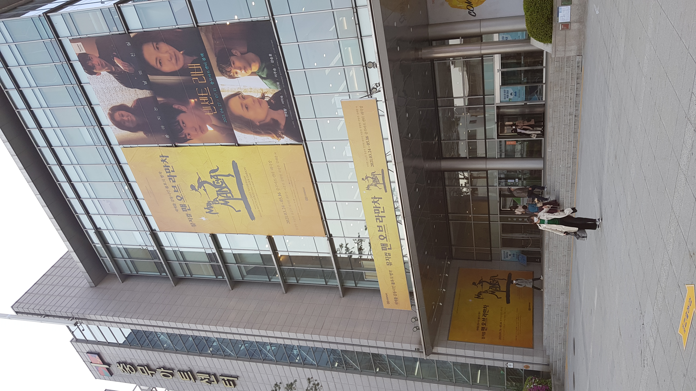

뮤지컬 맨오브라만차
기본정보
출연진
상영극장
리뷰/관람후기

상영극장
극장:
충무아트센터
위치: 서울시 중구 퇴계로 387
전화: 02-2230-6600
주차,예약,무선인터넷,유아시설(놀이방),남/녀화장실 구분, 장애인 편의시설
티켓 예매처 :
인터파크
예스24
상영기간 : 2021.3.24.(수) ~ 2021.5.16.(일)
시간 : 화~금 19:30, 토,공휴일 14:00, 19:00